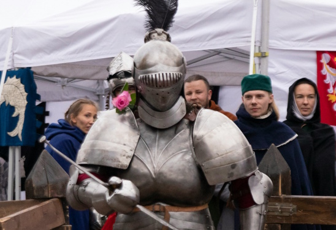

The Kalends of May, 1180
Hire a Stonemason
Gerblog The Honorous Stuns at Annual Banquet
What truths lie beneaquest lest armored visage?
Gerblog The Honorous speakeths greatly!

Trending


Life as a Guard who Only Tells the Truth
Yes, I Kidnapped The Princess
Life as a Guard who Also Only Tells the Truth